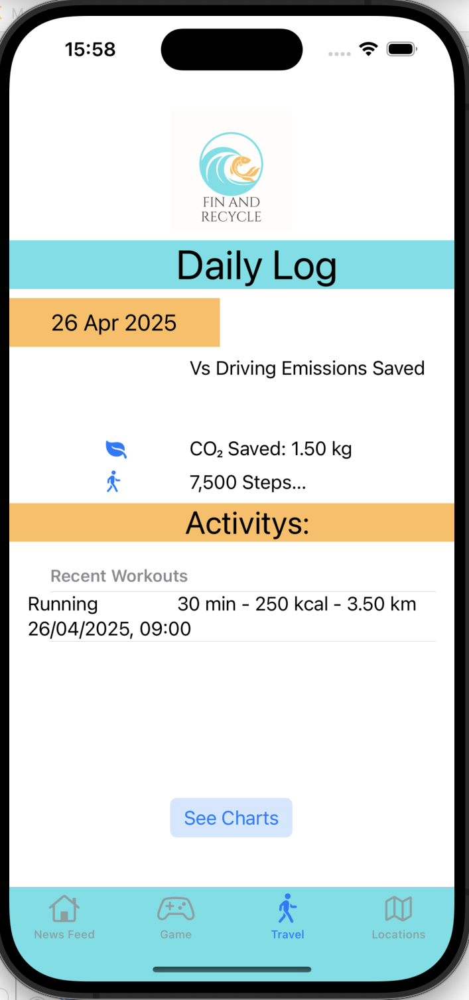
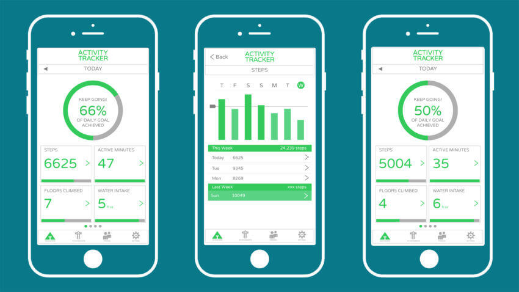
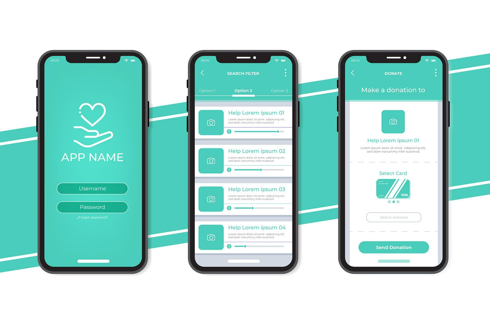

Your Ultimate Eco-Friendly Companion!

The Fin & Recycle App helps you take action for a cleaner planet by finding recycling locations, tracking your recycling progress, and monitoring your carbon footprint. Whether you're looking for a place to recycle, competing on the leaderboard, or reducing your environmental impact, this app is your all-in-one sustainability tool!
Key Features

- Find Recycling Locations: Search for nearby recycling centers to properly dispose of plastic, electronics, and more.
- User Registration & Login: Create an account to save your favorite locations, track your recycling efforts, and earn rewards.
- Leaderboard & Achievements: Compete with friends and the global community! The more you recycle, the higher you climb on the leaderboard. Earn badges and rewards for making an impact.
- Carbon Footprint Tracker: Stay informed about your carbon footprint based on your recycling habits and daily activities. Get insights on how to reduce your environmental impact.
- Track Your Recycling Progress: Keep a record of your recycling efforts and see how much waste you've helped divert from landfills.
- Learn & Take Action: Access eco-friendly tips, sustainability insights, and updates on global recycling initiatives.
Why Use the Fin & Recycle App?

- Eco-Friendly & Easy to Use: Quickly locate recycling centers and track your sustainability efforts.
- Make a Real Impact: Reduce waste, recycle smarter, and lower your carbon footprint.
- Stay Motivated: Join a global community, compete on the leaderboard, and earn achievements.
- Support Sustainability: Take small steps toward a greener future while learning more about how to protect the environment.Take small steps toward a greener future while learning more about how to protect the environment.